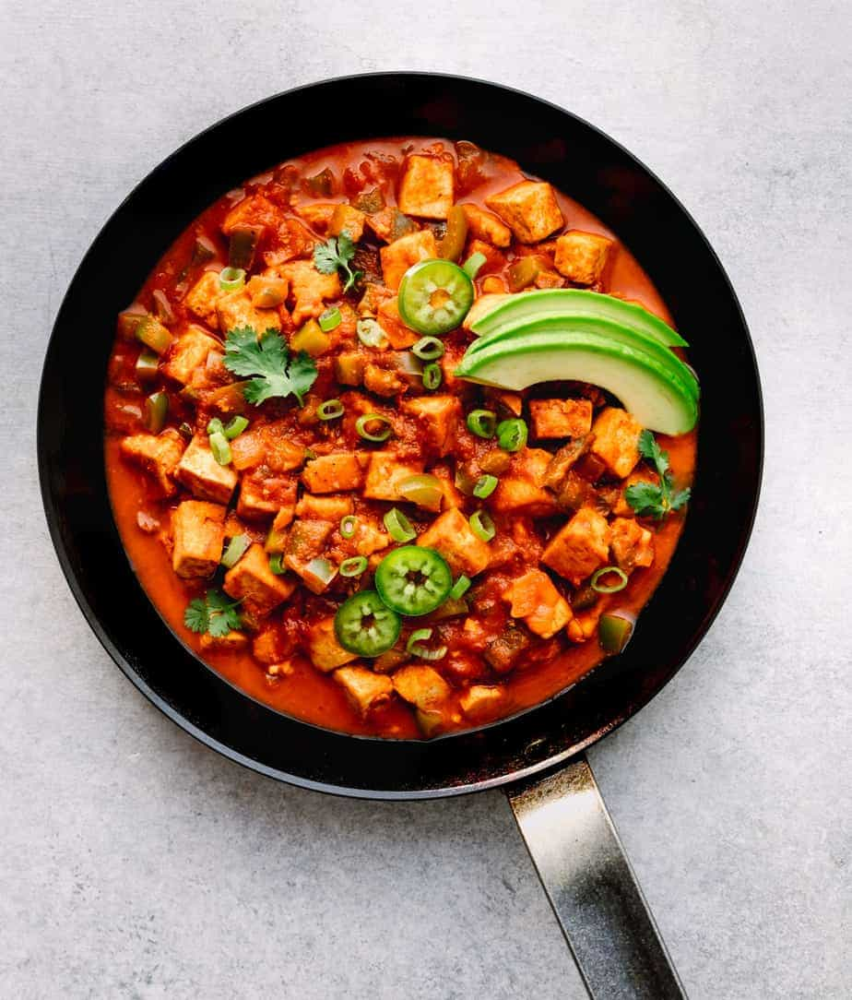

Tofu Ranchero

Description
A fast and easy meal with tofu in corn tortillas.
Ingredients
- Vegetable oil, to saute
- 16 ounces tofu, diced
-
6 cups diced mixed vegetables (recommended: onion, green bell peppers,
zucchini, corrots, and mushrooms)
- 2 cups salsa
- 8 corn tortillas
- Jack cheese, shredded
Steps
-
In a hot saute pan coated with oil, saute the tofu and vegetables until
al dente, about 6 to 8 minutes. Add the salsa and cook the mixture until
it is hot. Serve the tofu ranchero over a corn tortilla and top it with
shredded cheese.